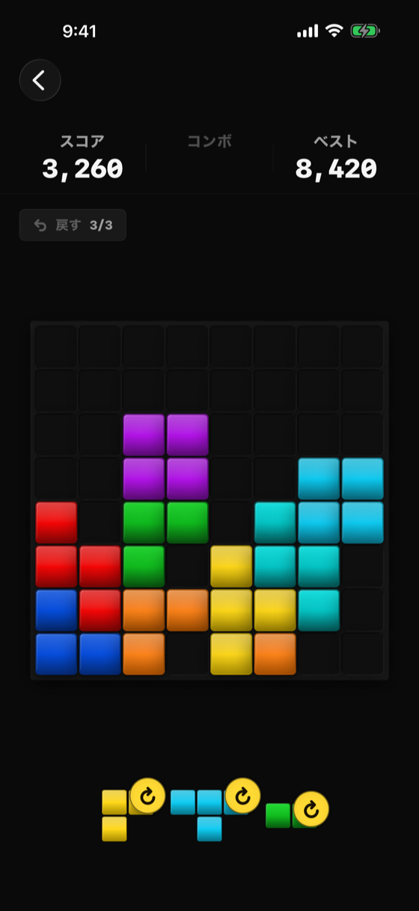

メインのゲームプレイ画面

| 要素 | 説明 |
|---|---|
| ScoreHeaderView | 現在スコア / ハイスコア / コンボ |
| GridView | 8×8グリッド描画（消去アニメ含む） |
| BlockTrayView | 3スロットのドラッグ可能ピース |
| プレビュー表示 | ドラッグ中の配置先ハイライト |
| 回転ボタン | ピースを4回転。タッチターゲット 48pt（→アクセシビリティ基準参照） |
| アンドゥボタン（戻すボタン） | 1手戻す（最大3回、2回目以降は広告）。タッチターゲット 48pt |
| PlayFeedbackOverlay | スコアポップアップ・賞賛テキスト・クロス爆発 |
| BannerAdView | 下部固定（広告除去未済時） |
| ボタン | タッチターゲット | 採用基準 |
|---|---|---|
| 回転ボタン | 48 × 48 pt | Material Design 3（Apple HIG 44pt より厳しい側） |
| アンドゥボタン（戻す） | 48 × 48 pt | 同上 |
OS の「文字サイズ」設定（アクセシビリティ設定含む）がアプリ内の文字サイズ設定（fontSizeLevel）より大きい場合は、OS 側の設定を優先して適用する。これにより、アプリ内設定を「標準」のまま使っているユーザーでも、OS でアクセシビリティ目的の大文字設定をしていれば正しく反映される。
| 状態 | 説明 |
|---|---|
.playing | 通常プレイ中 |
.gameOver | 配置不可・GameOverView オーバーレイ |
.rescued | リワード広告で救済中 |
| 操作 | 遷移先 |
|---|---|
| ゲームオーバー判定 | GameOverView（オーバーレイ） |
| 戻る | HomeView |
| バージョン | 日付 | 変更内容 |
|---|---|---|
| 1.0 | 2026-05-09 | 初版作成 |
| 1.1 | 2026-06-10 | 画面イメージ（fastlane snapshot 自動撮影）を追加 |
| 1.2 | 2026-07-14 | 回転・アンドゥボタンのタッチターゲットを 48pt（MD3 基準）に拡大。OS Dynamic Type 優先ロジックを反映。アクセシビリティ基準セクション新設 |